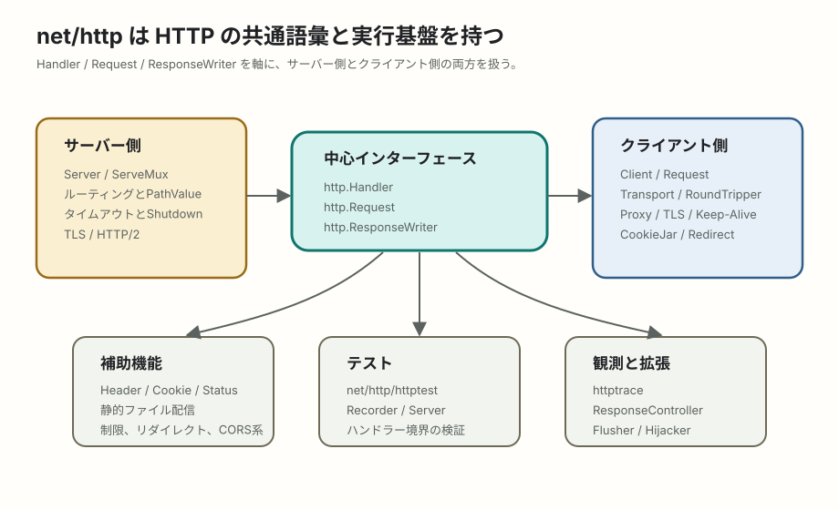

Go / net/http
Goのnet/httpは何ができるのか
net/httpは単なる小さなWebサーバー用ライブラリではなく、HTTPクライアント、サーバー、ルーティング、接続管理、静的ファイル配信、Cookie、テスト支援、HTTP/2、低レベル拡張まで含む標準ライブラリです。GoでWeb APIやHTTP連携を書くときの共通語彙だと考えると理解しやすくなります。
簡潔なQ&A
- Q. Goの
net/httpは、何が多機能なのですか？ - A. サーバーを立てる機能だけでなく、HTTPクライアント、リクエスト/レスポンス表現、ルーティング、接続プール、TLS、HTTP/2、静的ファイル配信、Cookie、フォーム処理、タイムアウト、Graceful Shutdown、テスト用サーバーまで揃っています。
- Q. フレームワークなしでWeb APIを作れますか？
- A. 作れます。Go 1.22以降の
ServeMuxはGET /users/{id}のようなメソッド付きパターンとパス変数に対応しているため、小から中規模のREST APIなら標準機能だけでも始めやすくなりました。 - Q. それでもGinやEchoなどを使う理由は何ですか？
- A. ルートグループ、バリデーション、バインディング、ミドルウェア集、エラー応答の整備、OpenAPI連携などをまとめて欲しい場合です。土台の考え方は
http.Handler互換を理解しているほど移行しやすくなります。

net/httpは、Handler、Request、ResponseWriterを中心に、サーバー側とクライアント側のHTTP処理を一つの語彙で扱えるようにしています。まず押さえる中心概念
net/httpの中心は、http.Handler、http.Request、http.ResponseWriterです。ハンドラーは「リクエストを受け取り、レスポンスを書き込むもの」です。この小さな約束に合わせると、標準のServeMux、サードパーティのルーター、ミドルウェア、テスト用のhttptestをつなげやすくなります。
func hello(w http.ResponseWriter, r *http.Request) {
w.Header().Set("Content-Type", "application/json")
json.NewEncoder(w).Encode(map[string]string{"message": "hello"})
}
mux := http.NewServeMux()
mux.HandleFunc("GET /hello", hello)
log.Fatal(http.ListenAndServe(":8080", mux))機能マップ
| 領域 | 主なAPI | できること |
|---|---|---|
| HTTPサーバー | ListenAndServe, Server, Serve |
TCPリスナー上でHTTPサーバーを動かす。読み書きタイムアウト、ヘッダーサイズ、TLS、終了処理などを制御する。 |
| ルーティング | ServeMux, Handle, HandleFunc, PathValue |
URLパスとHTTPメソッドに応じてハンドラーへ振り分ける。Go 1.22以降はパス変数を標準で扱える。 |
| ハンドラー共通規格 | Handler, HandlerFunc, ResponseWriter |
アプリ本体、ミドルウェア、ルーター、テストを同じ形でつなぐ。GoのWebエコシステムの接着面になる。 |
| HTTPクライアント | Client, NewRequestWithContext, Do, Get, Post |
外部APIへHTTPリクエストを送る。ヘッダー、メソッド、ボディ、リダイレクト、Cookie、タイムアウトを制御する。 |
| 接続管理 | Transport, RoundTripper |
接続プール、Keep-Alive、プロキシ、TLS、圧縮、HTTP/2などの通信層を調整する。 |
| リクエスト解析 | Request, ParseForm, ParseMultipartForm, FormValue |
クエリ、フォーム、multipartアップロード、ヘッダー、Cookie、Basic認証、User-Agentなどを読む。 |
| レスポンス補助 | Error, Redirect, StatusText, SetCookie |
HTTPステータス、エラーレスポンス、リダイレクト、Cookie設定を扱う。 |
| 静的ファイル配信 | FileServer, FileServerFS, ServeFile, ServeContent |
ディレクトリやio/fs互換のファイルシステムから静的ファイルを配る。更新日時やRangeリクエストにも関係する。 |
| 制限と安全策 | MaxBytesReader, MaxBytesHandler, TimeoutHandler, CrossOriginProtection |
リクエストボディサイズ、処理時間、クロスオリジン系の防御など、入口での制御を行う。 |
| 低レベル拡張 | Flusher, Hijacker, ResponseController |
ストリーミング、WebSocket風の接続引き継ぎ、読み書き期限、フラッシュなど、通常より低い層を触る。 |
| テスト | net/http/httptest |
実サーバーに近いテストサーバーやレスポンス記録器を使い、ハンドラーやHTTPクライアントを検証する。 |
| 観測 | net/http/httptrace |
DNS、接続、TLS、リクエスト送信、最初のレスポンス受信など、クライアント側の細かいタイミングを追う。 |
サーバー側: Web APIの入口を作る
サーバー側で最も基本になるのはhttp.ServerとServeMuxです。小さい例ではhttp.ListenAndServe(":8080", mux)で起動できますが、実務ではタイムアウトや終了処理を設定するため、http.Serverを明示的に作ることが多いです。
mux := http.NewServeMux()
mux.HandleFunc("GET /users/{id}", func(w http.ResponseWriter, r *http.Request) {
id := r.PathValue("id")
fmt.Fprintf(w, "user id = %s", id)
})
srv := &http.Server{
Addr: ":8080",
Handler: mux,
ReadTimeout: 5 * time.Second,
WriteTimeout: 10 * time.Second,
}
log.Fatal(srv.ListenAndServe())ReadTimeoutやWriteTimeoutを入れる理由は、遅いクライアントや詰まった接続でサーバー資源を持たれ続けるのを避けるためです。さらにデプロイ環境では、シグナルを受け取ってServer.Shutdown(ctx)を呼び、処理中リクエストに猶予を与えて終了する設計が重要になります。
ルーティング: Go 1.22以降のServeMux
以前の標準ServeMuxは素朴なパス一致が中心だったため、REST APIではchiなどのルーターを使う場面が多くありました。Go 1.22以降は、メソッド付きパターン、パス変数、末尾ワイルドカードが入り、標準機能だけで書ける範囲が広がりました。
mux.HandleFunc("GET /posts/{id}", getPost)
mux.HandleFunc("POST /posts", createPost)
mux.HandleFunc("GET /files/{path...}", getFile)ただし、ルートグループ、認証のかけ分け、複雑なミドルウェア構成、OpenAPI生成などが欲しい場合は、標準http.Handler互換のルーターを足す判断も自然です。
クライアント側: 外部APIを呼ぶ
http.Getやhttp.Postは手軽ですが、実務ではhttp.Clientとhttp.NewRequestWithContextを使うのが基本です。タイムアウト、キャンセル、ヘッダー、認証、JSONボディなどを明示できるからです。
ctx, cancel := context.WithTimeout(context.Background(), 3*time.Second)
defer cancel()
req, err := http.NewRequestWithContext(ctx, http.MethodGet, endpoint, nil)
if err != nil {
return err
}
req.Header.Set("Accept", "application/json")
resp, err := http.DefaultClient.Do(req)
if err != nil {
return err
}
defer resp.Body.Close()レスポンスボディは必ず閉じます。閉じないと接続が再利用されにくくなり、負荷時に接続数やファイルディスクリプタの問題につながります。
Transport: 見えにくいが重要な通信層
http.Transportは、HTTPクライアントの下で接続プール、プロキシ、TLS設定、Keep-Alive、圧縮、HTTP/2などを扱う部品です。公式ドキュメントでも、ClientとTransportは並行利用して再利用することが推奨されています。リクエストごとに作り直すと、接続プールが効かず性能と安定性を落としやすくなります。
tr := &http.Transport{
MaxIdleConns: 100,
MaxIdleConnsPerHost: 10,
IdleConnTimeout: 90 * time.Second,
}
client := &http.Client{
Timeout: 5 * time.Second,
Transport: tr,
}独自のRoundTripperを実装すると、リトライ、ログ、メトリクス、認証ヘッダー付与などをクライアント側ミドルウェアのように差し込めます。
静的ファイルとコンテンツ配信
FileServer、FileServerFS、ServeFile、ServeContentを使うと、HTML、CSS、画像、埋め込みファイルなどを配信できます。単なるファイル読み出しではなく、Content-Type推定、更新日時、条件付きリクエスト、RangeリクエストなどHTTPらしい配信の土台になります。
assets := http.FileServerFS(os.DirFS("public"))
mux.Handle("GET /assets/", http.StripPrefix("/assets/", assets))注意点として、ディレクトリをそのまま公開すると不要なファイルまで見える可能性があります。公開するファイルの範囲、ドットファイル、キャッシュヘッダー、認証の有無は別途設計します。
フォーム、Cookie、ヘッダー、ステータス
Requestには、ヘッダー、URL、クエリ、ボディ、フォーム、Cookie、Basic認証、User-Agent、RefererなどHTTPの典型的な情報がまとまっています。Header型は大文字小文字の扱いをHTTPらしく吸収し、Cookie型はSameSiteや有効期限などの属性を表現します。
name := r.FormValue("name")
cookie, err := r.Cookie("session")
http.SetCookie(w, &http.Cookie{
Name: "theme",
Value: "dark",
Path: "/",
HttpOnly: true,
SameSite: http.SameSiteLaxMode,
})フォームやmultipartアップロードを扱うときは、ボディサイズ制限も合わせて考えます。MaxBytesReaderやMaxBytesHandlerは、大きすぎるリクエストを入口で抑えるための道具です。
HTTP/2、TLS、プロトコル設定
net/httpはHTTP/2にも対応しています。公式ドキュメントでは、HTTPS利用時にServerとDefaultTransportがHTTP/2を自動的に有効化することが説明されています。さらに新しいAPIでは、HTTP/1、HTTP/2、暗号化なしHTTP/2の有効・無効をProtocols関連の設定で扱えます。
多くのアプリでは細かいHTTP/2設定を直接触る必要はありません。ただし、プロキシ、ロードバランサー、gRPC、ストリーミング、長時間接続が絡む場合は、サーバーとクライアントのプロトコル設定を確認する価値があります。
低レベル機能: ストリーミングや接続制御
通常のJSON APIではResponseWriterに書くだけで十分ですが、Server-Sent Events、ログストリーム、大きなデータの分割送信などではFlusherやResponseControllerが関係します。WebSocketのようにHTTP接続を別プロトコルへ引き継ぐ場面ではHijackerが使われることもあります。
このあたりは便利な反面、プロキシやHTTP/2との相性、タイムアウト、クライアント切断時の扱いが難しくなります。まずはフレームワークや専用ライブラリがどうnet/http上に乗っているかを理解するための知識として押さえるのがよいです。
テスト: httptestでHTTP境界を検証する
net/http/httptestを使うと、ハンドラーを直接呼ぶテストと、実際にHTTPサーバーを立てるテストの両方を書けます。ResponseRecorderはハンドラーの出力を記録し、httptest.Serverはクライアントからアクセスできる一時サーバーを作ります。
req := httptest.NewRequest(http.MethodGet, "/hello", nil)
rec := httptest.NewRecorder()
hello(rec, req)
if rec.Code != http.StatusOK {
t.Fatalf("status = %d", rec.Code)
}この仕組みのおかげで、ルーター、ミドルウェア、ハンドラーを実際のHTTPに近い境界で検証できます。外部APIクライアントのテストではhttptest.Serverで偽APIを立てると、モックより自然な検証になることがあります。
観測: httptraceでクライアント処理を分解する
net/http/httptraceは、クライアント側のHTTPリクエストがどこで時間を使っているかを追うためのパッケージです。DNS解決、接続取得、TLSハンドシェイク、リクエスト送信、最初のレスポンスバイト受信などをフックできます。
API呼び出しが遅いとき、アプリの処理が遅いのか、名前解決なのか、接続確立なのか、TLSなのか、相手サーバーの応答待ちなのかを切り分ける助けになります。
実務での使い分け
| やりたいこと | まず見るもの | 注意点 |
|---|---|---|
| 小さなREST APIを作る | ServeMux, HandlerFunc, Server |
タイムアウト、エラーJSON、ログ、認証は自分で設計する。 |
| 外部APIを呼ぶ | Client, Request, Transport |
タイムアウトとBody.Close()を忘れない。Clientは再利用する。 |
| ファイルを配る | FileServerFS, ServeContent |
公開範囲、キャッシュ、ディレクトリリスト、認証を確認する。 |
| 大きいアップロードを受ける | MaxBytesReader, ParseMultipartForm |
メモリ使用量、保存先、サイズ上限、タイムアウトをまとめて設計する。 |
| ハンドラーをテストする | httptest.NewRecorder, httptest.NewServer |
サービス層の単体テストとHTTP境界のテストを分けると見通しがよい。 |
| 通信が遅い理由を調べる | httptrace, Transport |
アプリログだけではなく、DNS、接続、TLS、相手応答を分けて見る。 |
よくある誤解
net/httpは「低機能だからフレームワーク必須」ではない
標準ライブラリだけでも、サーバー、ルーティング、クライアント、静的配信、テストは十分に扱えます。フレームワークを使う理由は、標準では足りないからというより、周辺機能とチーム内の書き方をまとめるため、という見方が近いです。
DefaultClientやDefaultServeMuxに寄せすぎない
サンプルでは便利ですが、実務では明示的なhttp.Clientやhttp.Server、http.NewServeMux()を作るほうが設定、テスト、依存関係の見通しがよくなります。
タイムアウトは一つ入れれば終わりではない
サーバー側の読み書きタイムアウト、クライアント全体のタイムアウト、リクエストごとのcontext、Transportの接続タイムアウトは役割が違います。どこで待ってよく、どこで諦めるかを処理単位で考えます。
要点
net/httpは、GoでHTTPを扱うための基礎レイヤーです。Webサーバー、HTTPクライアント、ルーター、接続管理、静的配信、Cookie、フォーム、テスト、観測まで含みます。まずHandler、Request、ResponseWriter、Client、Transportの役割を押さえると、標準ライブラリだけで作る場合も、GinやEchoなどを使う場合も、内部で何が起きているかを読み解きやすくなります。